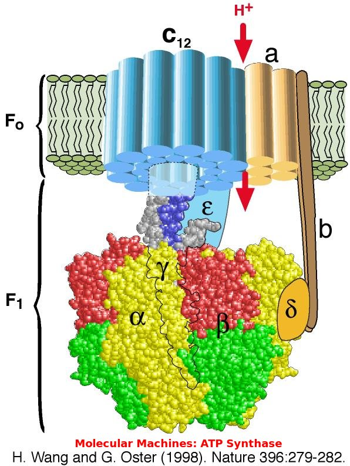
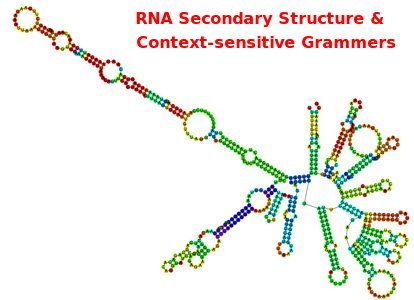
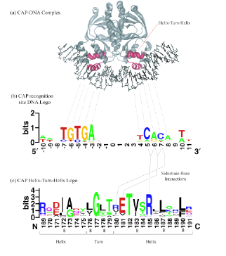
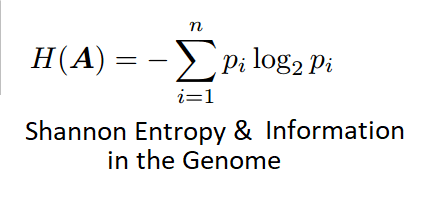
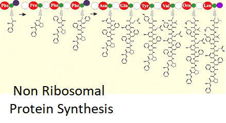

Education
- Over 35 professional training courses in Unix, Veritas, EMC & Oracle
Courses after Formal Degrees
University of California, San DiegoChemoinformatics
Biostatistics
Finding Hidden Messages in DNA (Bioinformatics I)
Genome Sequencing (Bioinformatics II)
Comparing Genes, Proteins, and Genomes (Bioinformatics III)
Clustering (Bioinformatics V)
Icahn School of Medicine at Mount Sinai
Introduction to Systems Biology
University of Michigan
Using Databases with Python
Programming for Everybody (Getting Started with Python)
Using Python to Access Web Data
Python Data Structures
University of California, Berkeley
Molecular Biology
Genetics
University of California, Davis
BIS 103: Bioenergetics and Metabolism
MCB 182 Principles of Genomics
Current Career Interest
Software development in Python, Javascript, HTML accessing databases or web information. Strong interest in the Bioscience applications.Former Career
Systems Softwae Specialist II Supervisor (DBA Unit) 2015Systems Software Specialist II (Unix Admin)
12/99 - Current
Dept. of Transportation Analysis, development, installation, implementation, procurement and support of departmental UNIX systems hosting corporate database systems and application server software. Test and install new versions of operating systems, system utilities and packaged software. Evaluate and install software patches and firmware updates. Design, code and implement Unix software to support end users, application developers and database administrators. Monitor and analyze server usage, including CPU, memory and large storage subsystems with specific needs of Oracle software performance and availability. Recommend and implement additional hardware as required to maintain proper system response times. Research new technology and Unix best practices efforts.
12/08/98 12/08/99 Senior Oracle DBA
MCI/WorldCom
Production DBA for nationwide realtime data acquisition and reporting systems. Some instances with transactions over 10,000 per minute. Responsible for advanced replication databases used for offline reporting and failover. I was part of a team that had to complete database migrations and testing for Y2K compliance. I provided analysis, contingency planning and testbed environments for new versions of commercial software as well as in house PL/SQL applications. Install, monitor and tune custom SQL/PLSQL applications on production servers. Selection of hardware architectures for the database server, network and desktop environments.
2/10/1997 12/08/1998 System Software Specialist I
Dept. of Transportation
Involved in all activities related to Oracle databases and servers, including code installs and upgrades (OFA compliant), security, performance tuning, network access, database backup and recovery procedures. Design and specification for server sizing, filesystem layouts, UNIX kernel parameters, memory management, system backup strategies, etc. Evaluation, installation and implementation of 3rd party Oracle products. Experienced with system and database monitoring tools. Perform independant research and acquire input from Oracle Support, Development and Consulting groups regarding Oracle product availability, compatability and resource requirements. Research on Oracle Best Practices relevant to Caltrans needs.
Interests




